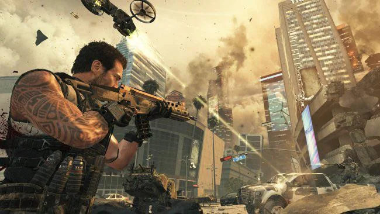
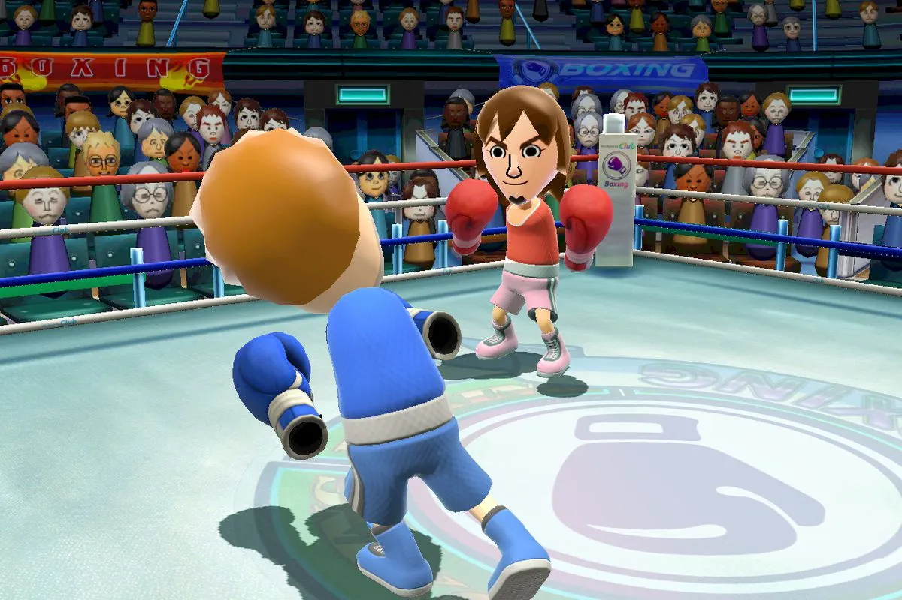
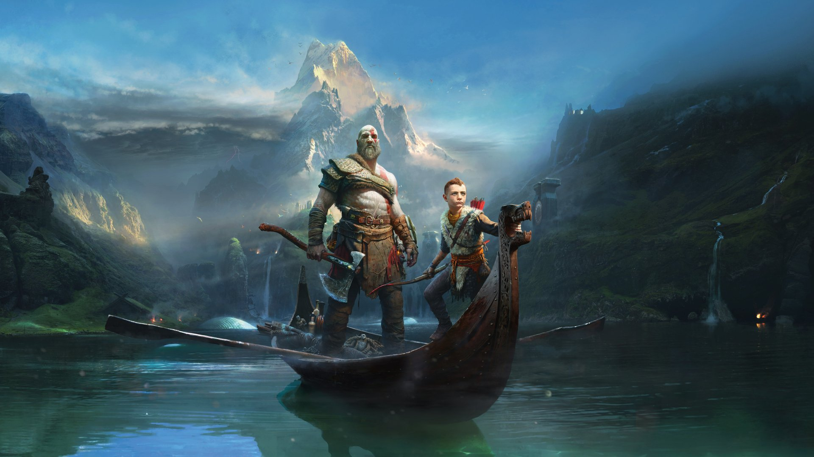
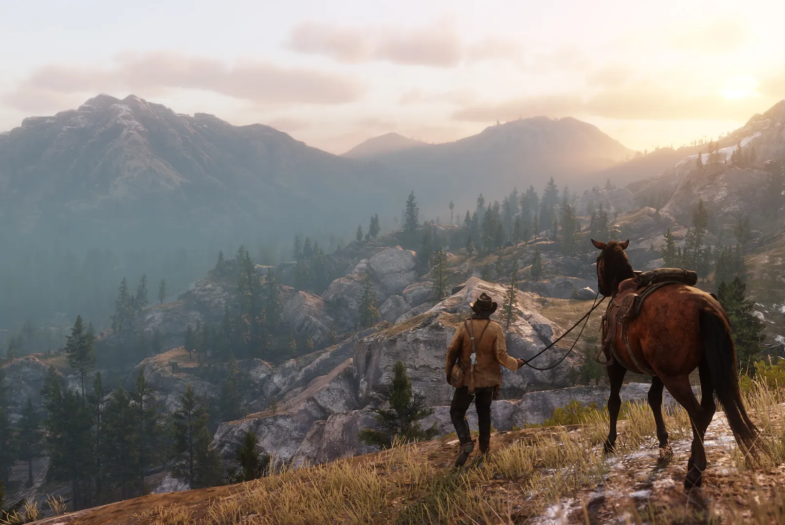

Call of Duty: Black Ops II

Call of Duty: Black Ops II is a 2012 first-person shooter video game developed by Treyarch and published by Activision. It was released for Microsoft Windows, PlayStation 3, and Xbox 360 on November 12, 2012, and for the Wii U on November 18 in North America and November 30 in PAL regions. Black Ops II is the ninth game in the Call of Duty franchise of video games, a sequel to the 2010 game Call of Duty: Black Ops and the first Call of Duty game for the Wii U. A corresponding game for the PlayStation Vita, Call of Duty: Black Ops: Declassified, was developed by nStigate Games and also released on November 13.
Wii Sports

Wii Sports is a 2006 sports simulation video game developed and published by Nintendo for the Wii video game console. The game was released in North America along with the Wii on November 19, 2006, and in Japan, Australia, and Europe the following month. It was included as a pack-in game with the console in all territories except Japan, making it the first sports game included with the launch of a Nintendo system since Mario's Tennis for the Virtual Boy in 1995. The game was later released on its own as part of the Nintendo Selects collection of games. Wii Sports is a collection of five sports simulations designed to demonstrate the motion-sensing capabilities of the Wii Remote. The five sports included are tennis, baseball, bowling, golf, and boxing. Players use the Wii Remote to mimic actions performed in real-life sports, such as swinging a tennis racket or rolling a bowling ball.[1] The rules for each game are simplified to make them more accessible to new players. The game also features training and fitness modes that monitor players' progress in the sports
God of War

God of War is an action-adventure game franchise created by David Jaffe and developed by Sony's Santa Monica Studio. It began in 2005 on the PlayStation 2 (PS2) video game console and has become a flagship series for PlayStation, consisting of nine installments across multiple platforms. Based on ancient mythologies, the series' plot follows Kratos, a Spartan warrior who becomes the God of War and comes into conflict with various mythological pantheons. The earlier games in the series are based on Greek mythology and see Kratos follow a path of vengeance against the Olympian gods; the later games are based on Norse mythology and see Kratos on a path of redemption while also introducing his son Atreus as a secondary protagonist, as they come into conflict or interact with various Norse deities and figures. Santa Monica Studio has developed all main entries, while Ready at Dawn and Javaground/Sony Online Entertainment-Los Angeles (SOE-LA) developed the three side games. Sony Interactive Entertainment (SIE) has published all games except the mobile phone installment, which was published by Sony Pictures Digital. The first seven games make up the Greek era of the franchise. God of War (2005), God of War II (2007) and God of War III (2010) comprise its main trilogy; the first two were released on the PS2 with the third on the PlayStation 3 (PS3). A prequel, Ascension (2013), was also released for the PS3. Other games include Chains of Olympus (2008) and Ghost of Sparta (2010) for the PlayStation Portable (PSP) and Betrayal (2007) for mobile phones that supported the Java Platform, Micro Edition (Java ME). The Norse era began with the 2018 game God of War, which was released for the PlayStation 4 (PS4) and later Windows in January 2022. It was accompanied by a short prequel, A Call from the Wilds (2018), a text-based game through Facebook Messenger. A sequel, Ragnarök, was released in November 2022 for the PS4 and PlayStation 5 (PS5) and concluded the Norse era, which received an epilogue in the form of an expansion pack titled Valhalla in December 2023; a Windows port of Ragnarök with Valhalla was released in September 2024.
© 2025 Sony
Red Dead Redemption II

Red Dead Redemption is a 2010 action-adventure game developed by Rockstar San Diego and published by Rockstar Games. A successor to 2004's Red Dead Revolver, it is the second game in the Red Dead series. Red Dead Redemption is set during the decline of the American frontier in the year 1911. It follows John Marston, a former outlaw who, after his wife and son are taken hostage by the government in ransom for his services as a hired gun, sets out to bring three members of his former gang to justice. The narrative explores themes of the cycle of violence, masculinity, redemption, and the American Dream.
The game is played from a third-person perspective. The player can freely roam in its interactive open world, a fictionalized version of the Western United States and Northern Mexico, primarily by horseback, and on foot. Gunfights emphasize a gunslinger gameplay mechanic called "Dead Eye" that allows players to mark multiple shooting targets on enemies in slow motion. The game uses a morality system by which the player's actions affect their character's levels of honor, fame, and how other characters respond to the player. An online multiplayer mode is included with the original release, allowing up to 16 players to engage in both cooperative and competitive gameplay in a recreation of the single-player setting.
The game's development lasted over five years, and it became one of the most expensive video games ever made. Rockstar improved its proprietary game engine to increase its technological capabilities. The development team conducted extensive research, including field trips to Washington, D.C. and analyzing classic Western films, to achieve realism for the game. The team hired professional actors to perform the body movements through motion capture. Red Dead Redemption features an original score composed by Bill Elm and Woody Jackson. The game's development received controversy following accusations of unethical working practices. The studio's working hours and managerial style were met with public complaints from staff members.